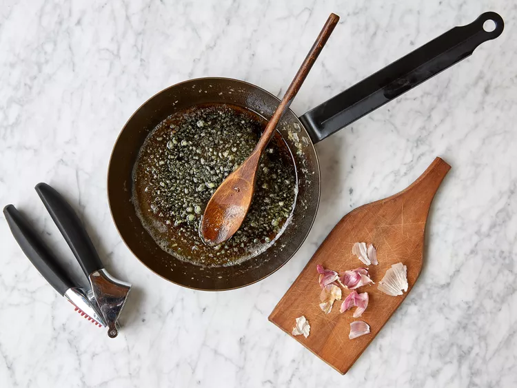
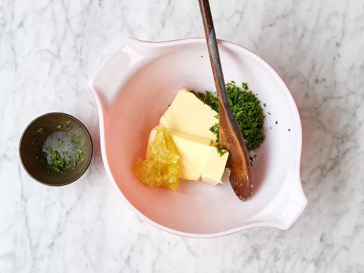
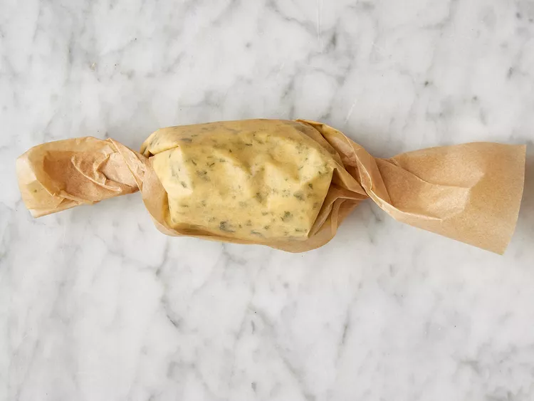
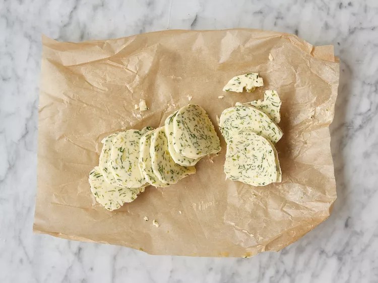
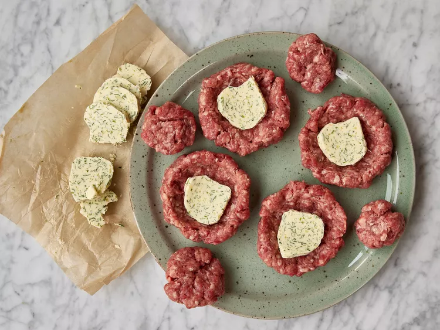
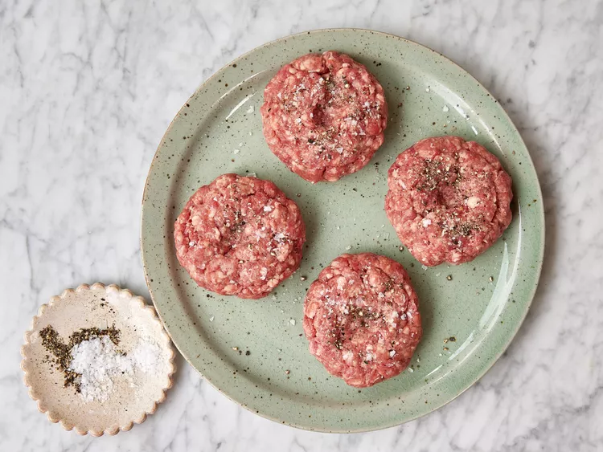
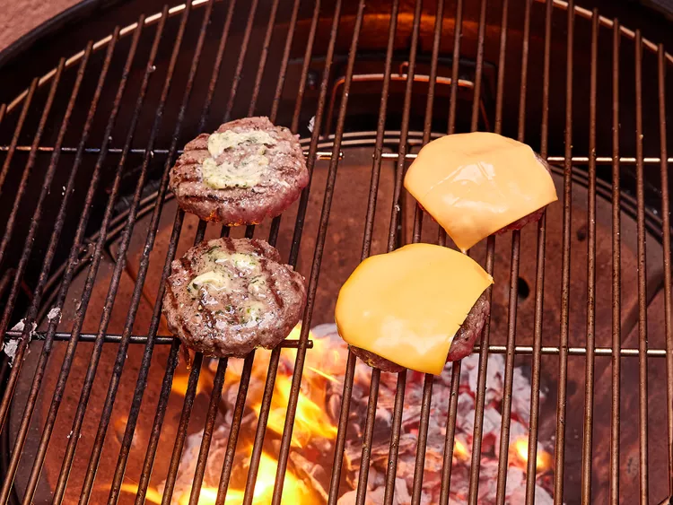
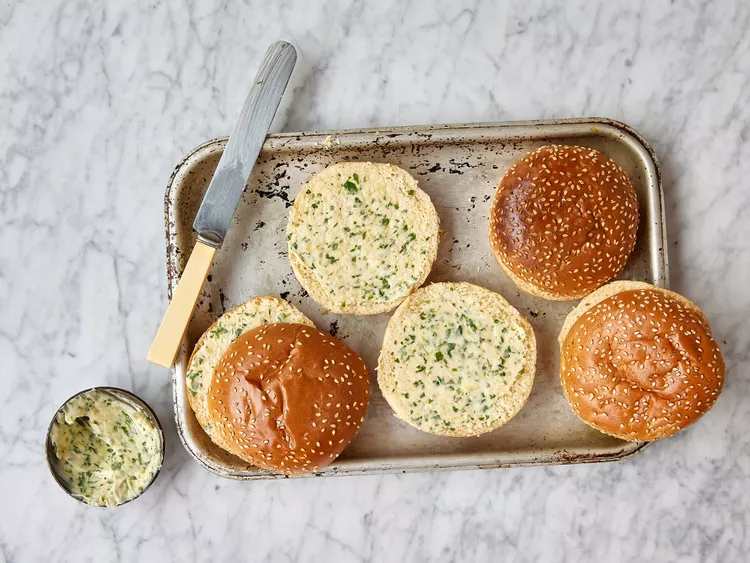
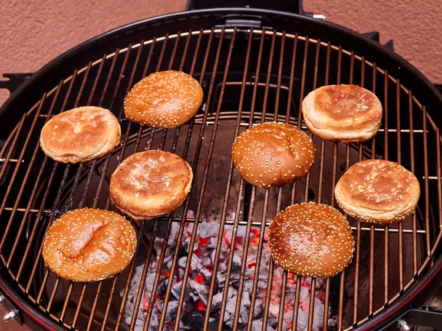
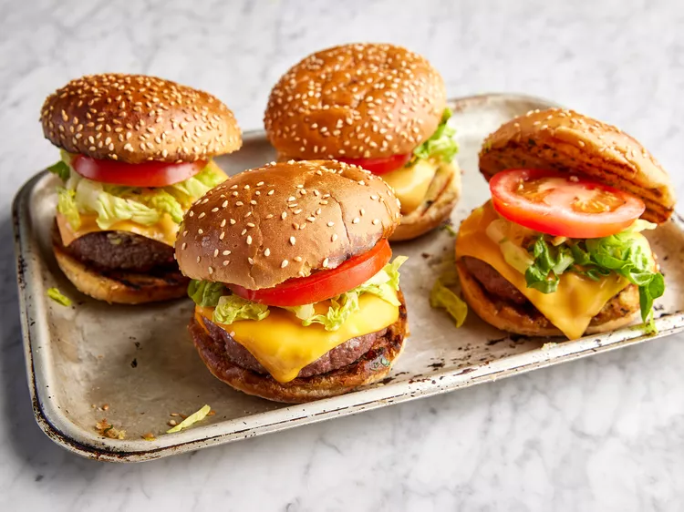

Garlic Butter Burger
Ingredients
- 4 cloves garlic
- 1/2 cup salted butter, softened, divided
- 2 tablespoons finely chopped fresh parsley
- 1 pound 80% lean ground beef
- salt and freshly ground black pepper
- 4 slices American cheese
- 4 brioche burger buns
- 4 slices tomato
- 1/2 cup shredded lettuce
Steps
- Crush garlic and then cook it in 2 tablespoons butter in a small pan over medium heat for 1 to 2 minutes. This is just to remove the raw flavor of the garlic.

- Let cool, then mix it into the remaining butter with parsley.

- Set half of garlic butter aside to use for spreading on the buns. Wrap remaining butter in a sheet of wax paper, roll it into a log (about 1 1/4 inch diameter), then place into the freezer to harden completely, about 20 minutes.

- Unwrap frozen butter, and slice into at least 8 thin disks. It’s better to have more than 8 slices if you can to have a few spares. Return 4 slices to the freezer to stay firm.

- Preheat an outdoor grill to a medium-high heat, about 400 degrees F (200 degrees C), then shape the burgers. Divide beef into 4 3-ounce pieces and 4 1-ounce pieces. Form the 3-ounce hunks into a patty with a well in the center to help contain the butter. Place a frozen disk of garlic butter on top of each of the 4 patties.

- Use the 1-ounce pieces of beef to cover the butter disks, pressing beef together firmly to seal butter inside. Season both sides of each patty with a pinch of salt and black pepper, then press your thumb into the middle of each burger to create a little dip on top.

- Grill burgers for 3 to 4 minutes on one side then flip over. Top each with a disk of garlic butter and, once melted, top with a slice of American cheese. Let them cook for 3 to 4 minutes on this side, then remove from the grill to a clean tray to rest.

- Meanwhile, spread softened garlic butter you set aside earlier over the cut sides of burger buns.

- Grill buns, cut side down, until lightly toasted, about 30 seconds.

- Stack burgers into grilled buns with lettuce and tomato and any other bits you want. Serve burgers warm.

Home